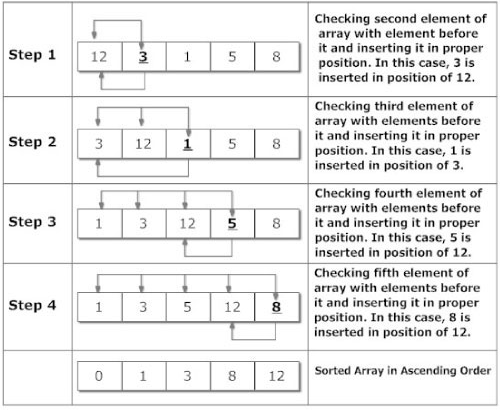

If you are majoring in Computer Science or trying to start a career in programming, one of the first algorithms you are introduced to is the Insertion algorithm. This algorithm is considered one of the first few stable sorting algorithms and it is also simple. This builds or sorts your list one item at a time. However, when it comes to larger lists, it becomes less efficient because it has to look and evaluate each element at a time. Finally, it then compares itself with its neighboring element(to the right). This process is repeated depending on the length of your list.
This algorithm is best explained or taught using visual examples. For this tutorial, I will present you with a standard workflow of this algorithm as well as a Baseball Example. Why baseball? I say, "Why not?"
Below is a standard workflow that I've gathered from Programiz
Explanation
It begins with the second element (number 3) of an array that is compared with the elements that appears before it (number 12). If the second element is smallr than the first element, the second element is inserted in the position of the first element. After this step, the first two elements of an array will be sorted. The same is applied to the rest of the elements in the array.
Our Baseball Example
For our personal example, we will be using Baseball. If you are a die hard baseball fan like myself, you should know that the sport itself is highly motivated by statistics. This sport has an unlimited number of arrays we can use as examples. For here, I will be using Major League Baseball's 2015 Payroll estimations.
The sport has 30 teams in its league. Each team at the beginning of a new season has a payroll obligation. For the year 2015, that obligation is listed below. The figures are in millions.
I have listed all 30 teams in a random order. As you can see, each team has its name, logo pic, and most importantly, estimated 2015 payroll.
To see the Insertion Sort Algorithm in work click the SORT button!
HINT: Pay attention to where teams are placed in the table and slowly see them sorted. Towards the end, you will start noticing a decline in sorting time. Remember, the bigger the list the slower the sorting time (this is the last algorithm you would want to use on large lists).